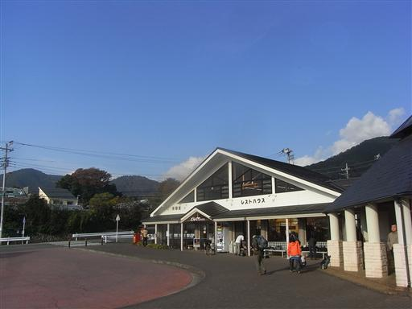
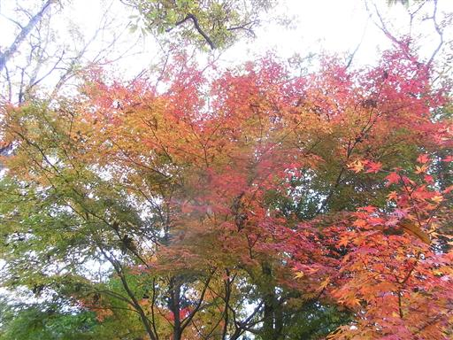
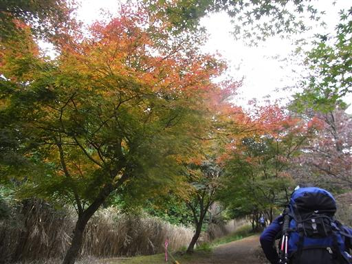
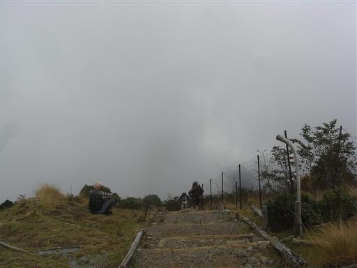
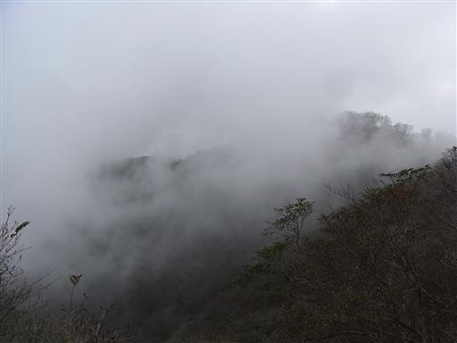

塔ノ岳
| 日付 | 2008年11月15日（土） |
|---|---|
| 山域 | 丹沢 |
| メンバー | グループ（男3女2） |
| 山行形態 | 日帰り |
| アクセス | 電車、バス |
| ルート (Map) | 大倉→塔ノ岳（往復） |
山で豚シャブをやろうという話があり、行くことにする。
食料と飲み物を持って、塔ノ岳山頂をめざす。
8:38 大倉バス停到着。標高285m。
青空が広がっているが、今日の天気は午後から曇り予報。

所々赤く色付いているもみじがある。

昨年の同じ時期にこの道を歩いたが、そのときに比べると葉が青い。
今年は少し紅葉が遅れているようだ。

進む先は灰色の雲に覆われている。
今日も山頂からの展望はなさそうだ。

丹沢の山々が雲の間から微かに顔を出している。

11:30 塔ノ岳山頂到着。標高1491m。
3度目の登頂だ。

山頂で豚シャブをつくって食べる。
天気は悪いが、あまり寒くないので助かる。
下山は往路を戻る。

他の山行記録